UX Research
Finding the topic
The project started with an open question. After evaluating different domains, the choice came down to two areas: education and food. We decided to go with education, a topic we felt more personally connected to and one with deeper social implications we wanted to explore.
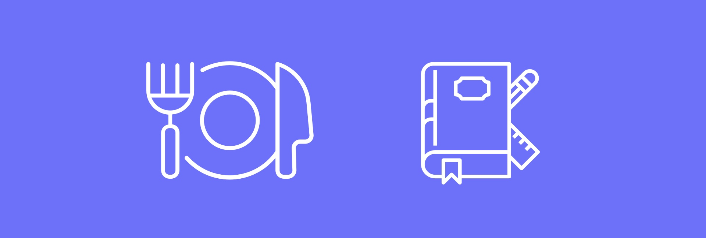
Getting the data
A first round of desk research helped us understand the landscape before talking to people. From there, we moved to interviews with those closest to the education system: parents, students and teachers. The conversations were structured in thematic blocks : organisation, communication, relationships, tools, available resources, and included a specific section on how the Covid pandemic had reshaped their reality.
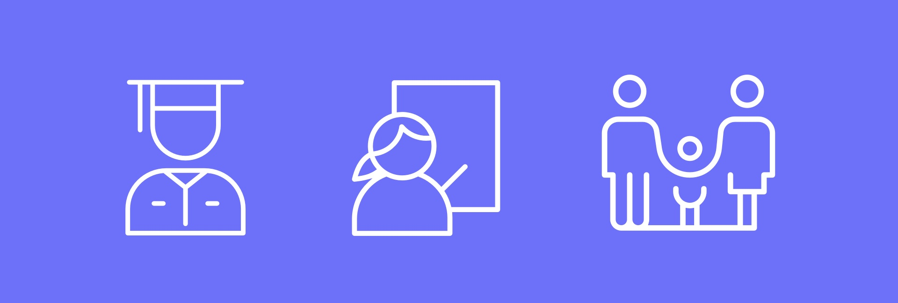
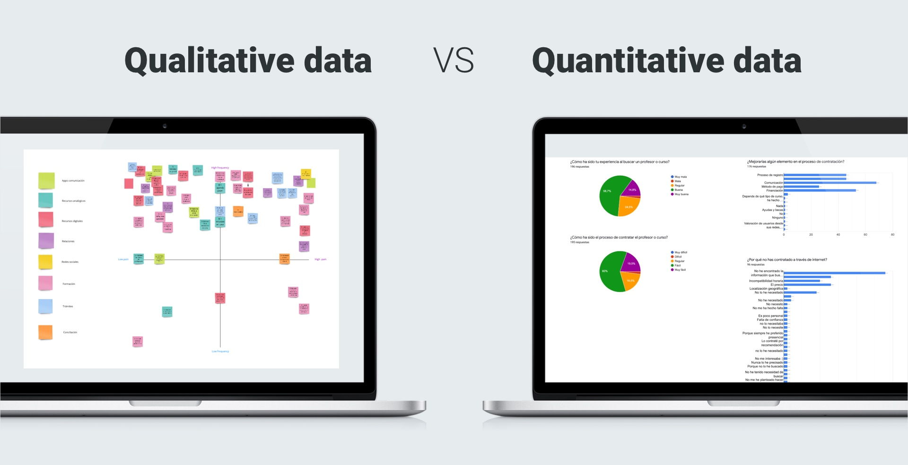
Iteration: a pivot that changed everything
With our first round of data we created three user personas: Lucía (student), Daniel (teacher) and Martha (mother). But as we went deeper, a more urgent and underexplored problem started to surface. We shifted our focus from education in general to a more specific and critical issue: the digital divide and talent.
This pivot meant updating our personas too. We moved from students, teachers and parents to three new profiles: applicants, recruiters, and training centres. A triangle where everyone had something to give and something to gain.
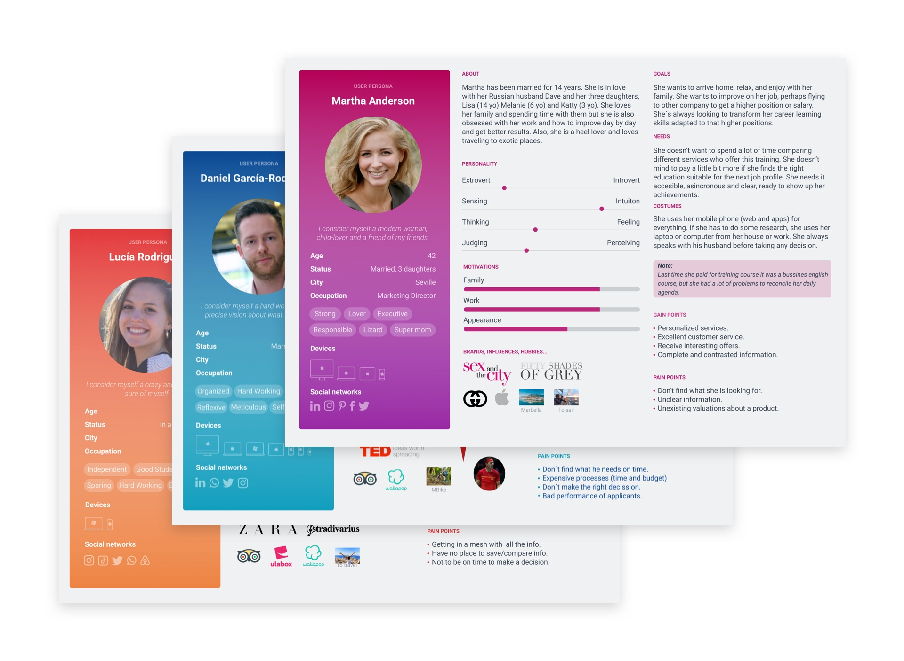
Generating insight
With the new direction, we went back to research, this time combining qualitative depth with quantitative data. Cross-referencing interview findings with broader desk research helped us identify a clear, validated problem to solve. We had our insight.
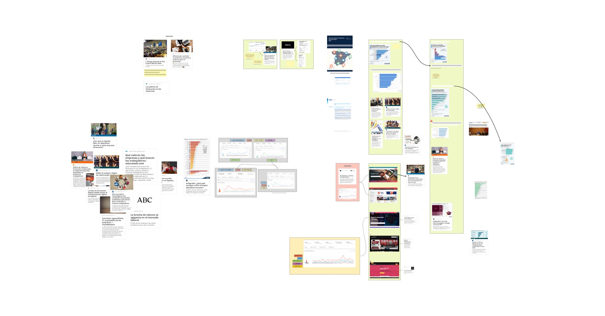
How might we…
With the insight in hand, the natural next step was reframing the problem as an opportunity. We worked through a series of "How might we…" questions to open up the solution space and find the angle that felt most meaningful , the one that gave us the feeling we'd reached an inflection point.
UX Design
Knowing our users
To understand what each profile truly needed, we used the Value Proposition Canvas methodology. Mapping gains, pains and jobs-to-be-done for applicants, recruiters and training centres gave us a clear picture of what a viable product would look like , and where the real value exchange between profiles could happen.
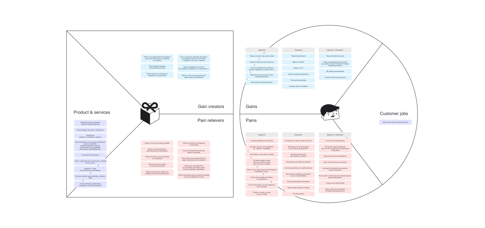
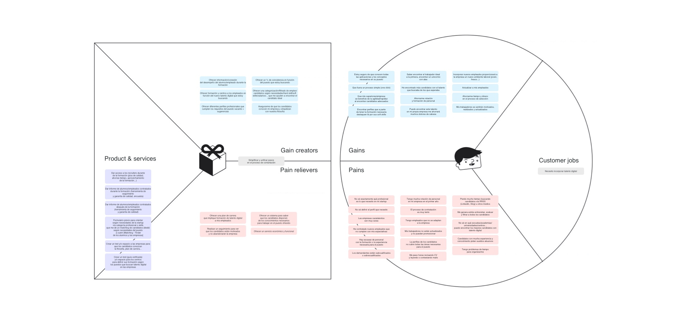
The value proposal
At this point, everything connected. The applicant is not just a user, they are the link between the other two profiles. Their assessment results close the loop: they help recruiters find talent and help training centres reach people who need what they offer. Inclusive, bidirectional, and genuinely useful to everyone in the system.
We connect people with their future and the companies or training centers with talent.
From this, we defined three distinct user flows. For applicants, the critical touchpoint was the assessment test, the moment where their skills and potential were made visible. For recruiters and training centres, the key value was the matching: surfacing the right talent based on real assessment results.
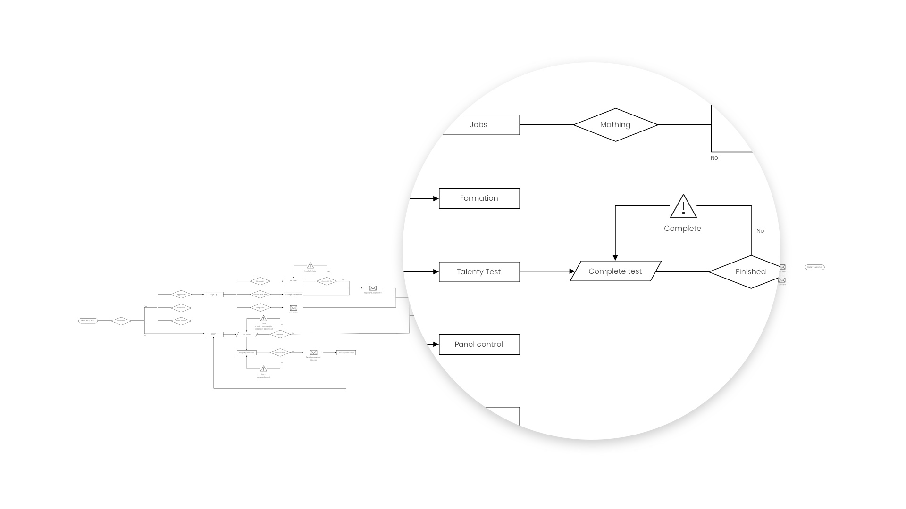
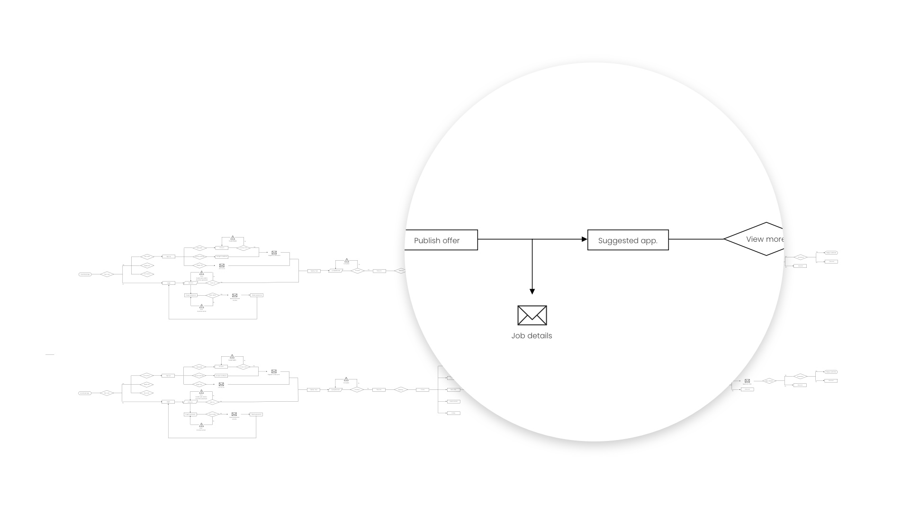
Defining the MVP
A user journey map helped us give shape to Talenty as a concrete product. From there we defined the MVP, what we needed to build first to validate the concept and set the foundation for future iterations. The wireframing process was deliberately split: we each worked independently first to bring fresh perspectives, then came together to compare, debate and justify our decisions. That friction was productive. Out of the discussion came a stronger, more considered design.
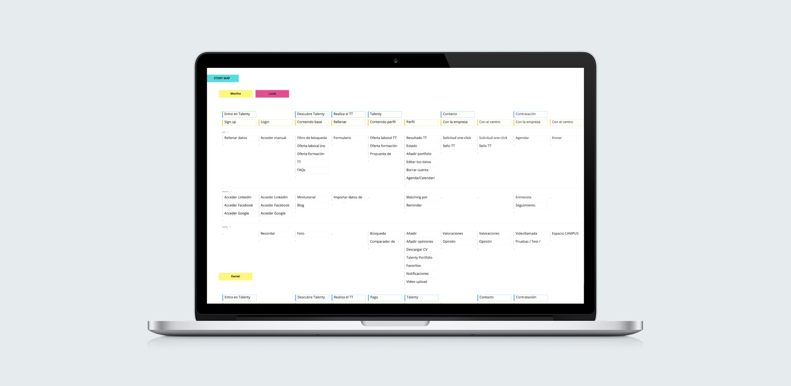
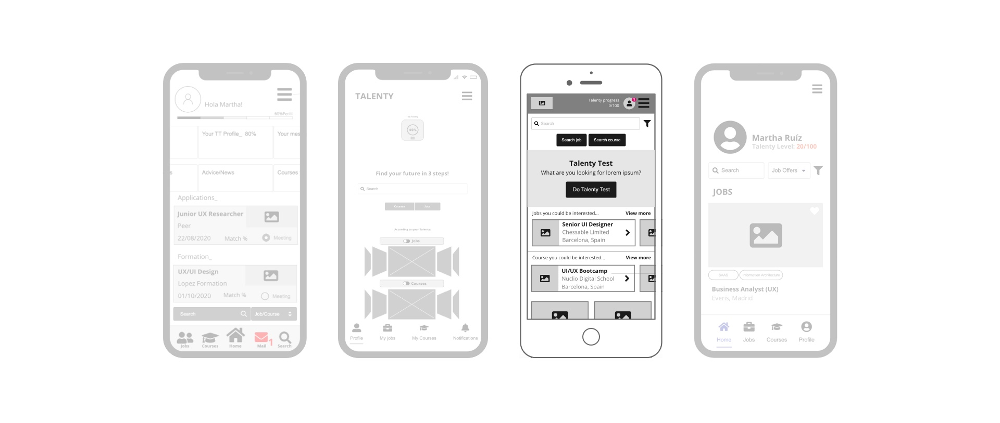
UI Design
Look and feel
With the UX structure validated, we moved into UI research. We built a moodboard to align the visual direction: modern, technological, with enough warmth to not feel cold or intimidating. The goal was a product that felt serious enough to be trusted by recruiters, and approachable enough to be used comfortably by anyone, regardless of their digital confidence.
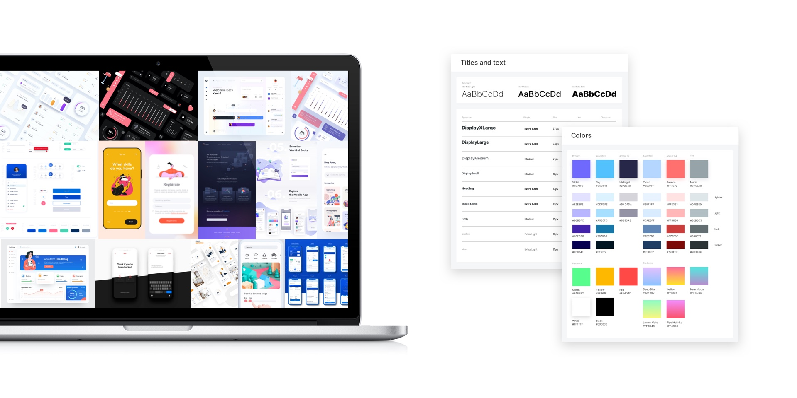
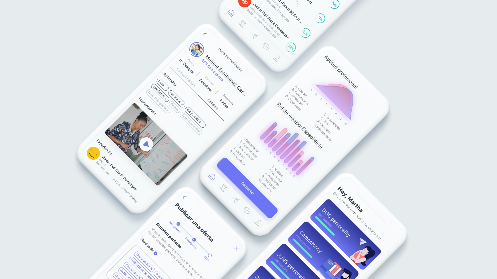
The design system and guidelines were defined from scratch for Talenty: colour tokens built on a deep purple palette, a typographic scale that balanced clarity with personality, spacing rules, and a custom illustration system to inject humanity into the experience. The challenge was keeping everything coherent through continuous iterations, while making the key interaction: the assessment test, feel like a game, not a judgement.
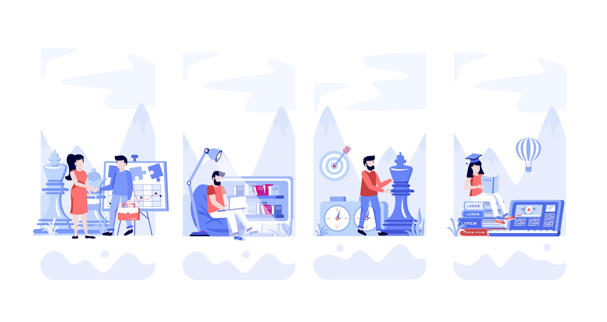
Test
Once the prototype was ready, we tested it with real users. We defined the tasks, ran the sessions and observed how people navigated, where they got confused, and what worked naturally. After gathering and analysing the results , assessing completion rates, comprehension and overall experience. We iterated again to improve the most critical flows before the final delivery.
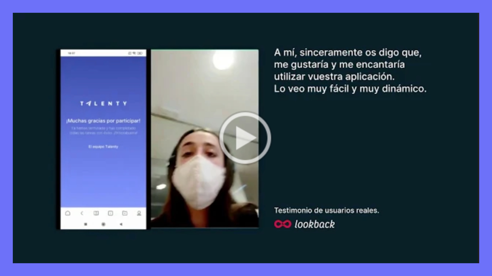
Prototype walkthrough
Watch the full prototype walkthrough:
Final reflection
Talenty was a project about the whole picture. It started with an open question and ended with a product that bridges real people: those looking for an opportunity, those offering one, and those who can help someone become ready for it. That triangular value exchange, where everyone is both giver and receiver, is what made this project genuinely meaningful.
Working through the full process, from early interviews and persona pivots, through value proposition thinking, all the way to a tested and iterated prototype, reinforced something I believe deeply: good design is not about the solution you imagine at the start. It's about staying curious, being willing to pivot when the data tells you to, and never losing sight of the real person on the other side of the screen.